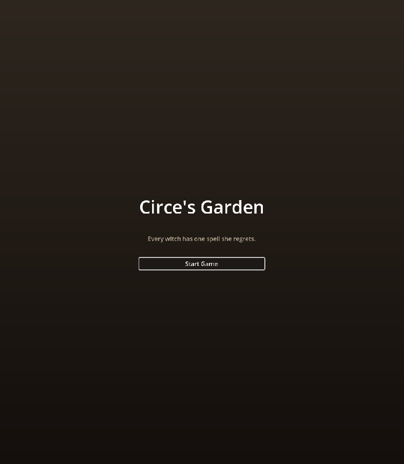
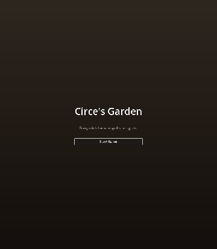

Circe's Garden
A 20-minute story game in Godot 4.5, based on Madeline Miller's novel. Open pixel art composed by code.
The clip and who did what (2 min)Toronto · open to remote
I sell, and I build with AI.
I am looking for a technical account executive or solutions engineer role at an AI company. This site shows a game I built with Claude Code, the agent system that runs my admin, and how I check what AI gives me.
Live: the island from my game. Drag to turn it.
of my qualified-opportunity quota in my first 60 days as a BDR, promoted to enterprise BDR by month four.
of game, built with Claude Code and tested by a script that plays it from the title screen to the credits.
on a Linux server that runs my personal admin under written permission rules, every day.
A 20-minute story game in Godot 4.5, based on Madeline Miller's novel. Open pixel art composed by code.
The clip and who did what (2 min)My personal agent system, described in plain boxes. No screenshots on purpose.
Described below (1 min)
Nine headless tests and a browser playthrough that waits on the game's own log before every step.
The checks (2 min)
Full cycles to boards and buying committees, and an AI outreach workflow the whole team used.
The numbers I can defend (2 min)
What failed first: in February 2026 an image model drew the sprite sheets, and frames drifted, directions swapped and backgrounds stayed opaque. In October I switched to open Liberated Pixel Cup art composed by code, and every sheet is checked by a script.
[Dialogue] start hermes_intro or [GameState] Planted moly, so nothing is assumed.Described, not shown. It runs my admin so my attention is free for the rest.
The master copies of its rules live on my laptop and a script copies them to the server, so every change is reviewed before it ships. A written fix exists for the day the sign-in expires.
I'm a salesperson in Toronto. I started in door-to-door sales, worked as a BDR at an education software company, then ran full sales cycles as an account executive selling virtual healthcare to unions and police associations. I also build things with AI: an outreach workflow I co-built with my manager, a personal agent system that runs my admin, and the game on this site. I'm looking for a technical account executive or solutions engineer role at an AI company.